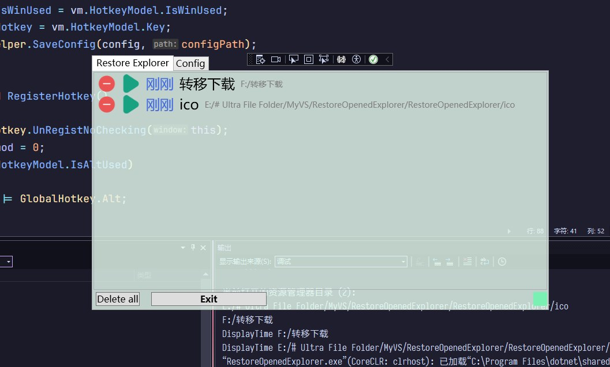
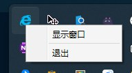

透明窗口 将窗口的 WindowStyle 属性设置为 None，AllowsTransparency 属性设置为 True，并将 Background 设置为 Transparent
1 2 3 4 5 6 7 8 9 10 11 12 13 <Window x:Class ="Window1" mc:Ignorable ="d" Title ="SetPageY" WindowStyle ="None" ResizeMode ="CanMinimize" AllowsTransparency ="True" Background ="Transparent" > <Border Margin ="10" MouseLeftButtonDown ="Window_MouseLeftButtonDown" > <Border.Effect > <DropShadowEffect BlurRadius ="10" Color ="#FF486DAA" ShadowDepth ="11" /> </Border.Effect > </Border > </Window >

支持拖拽 在窗口的根容器（如Border、Grid等）上绑定MouseLeftButtonDown事件，用于触发拖拽操作。
1 2 3 4 5 6 7 8 9 10 11 12 <Window x:Class ="WpfApp1.MainWindow" ... WindowStyle ="None" <!-- 无边框 -- > <Border Background ="White" <!-- 实际窗口背景色 （区别于窗口的透明背景 ） -- > </Border > </Window >
1 2 3 4 5 6 7 8 9 10 private void Border_MouseLeftButtonDown (object sender, MouseButtonEventArgs eif (e.ButtonState == MouseButtonState.Pressed)this .DragMove();
拖拽缩放 为了简单，选择在右下角创建一个 Border，并绑定鼠标左键按下、移动、释放事件，实现窗口的拖拽缩放。
1 2 3 4 5 6 7 8 9 10 <Border Name ="ResizeGrip" Grid.Column ="1" Width ="24" Height ="24" Background ="#7af0b3" Cursor ="SizeNWSE" MouseLeftButtonDown ="Border_MouseLeftButtonDown" MouseMove ="Border_MouseMove" PreviewMouseLeftButtonUp ="Border_PreviewMouseLeftButtonUp" />
1 2 3 4 5 6 7 8 9 10 11 12 13 14 15 16 17 18 19 20 21 22 23 24 25 26 27 28 29 30 31 32 33 34 35 36 37 38 39 40 41 42 43 44 #region drag scale private bool isResizing = false ;private Point startMousePos;private double startWidth;private double startHeight;private void Border_MouseMove (object sender, MouseEventArgs eif (isResizing && e.LeftButton == MouseButtonState.Pressed)var currentMousePos = e.GetPosition(this );double deltaX = currentMousePos.X - startMousePos.X;double deltaY = currentMousePos.Y - startMousePos.Y;double newWidth = startWidth + deltaX;double newHeight = startHeight + deltaY;this .Width = Math.Max(newWidth, 300 ); this .Height = Math.Max(newHeight, 200 ); private void Border_MouseLeftButtonDown (object sender, MouseButtonEventArgs etrue ;this );this .Width;this .Height;private void Border_PreviewMouseLeftButtonUp (object sender, MouseButtonEventArgs efalse ;#endregion
注意：如果同时启用了拖拽移动和拖拽缩放，并且它们的范围有重叠，那么缩放会出bug
解决同时使用拖拽和缩放 解决方法：拖拽移动添加判断逻辑，只要鼠标在 Border 上移动，就不允许缩放。
1 2 3 4 5 6 7 8 9 10 11 12 private void Border_MouseLeftButtonDown (object sender, MouseButtonEventArgs eif (ResizeGrip.IsMouseOver || isResizing) return ;if (e.ButtonState == MouseButtonState.Pressed)this .DragMove();
窗口的隐藏和显示 期望效果：鼠标点击窗口外面，隐藏窗口。使用 Deactivated 事件实现。
1 2 3 4 5 6 <Window x:Class ="RestoreOpenedExplorer.MainWindow" ... AllowsTransparency ="True" Background ="Transparent" Deactivated ="Window_Deactivated" >
1 2 3 4 private void Window_Deactivated (object sender, EventArgs ethis .Hide();
显示：
1 2 3 4 5 6 7 private void ShowMe ()true ;
通过任意方式调用 ShowMe() 方法，即可显示窗口。
最小化到后台 由于 .NET 8.0 不再支持引入 Windows 窗体，所以无法使用原生提供的最小化到后台功能。
使用 H.NotifyIcon 库实现最小化到后台功能。
按需引入：
1 2 3 4 5 6 7 Install-Package H.NotifyIcon.Wpf
其官方示例：
1 2 3 4 5 6 7 8 9 10 11 12 13 14 <Window xmlns:tb ="clr-namespace:H.NotifyIcon;assembly=H.NotifyIcon.Wpf" // WPF xmlns:tb ="using:H.NotifyIcon" // WinUI > <tb:TaskbarIcon ToolTipText ="ToolTip" IconSource ="/Images/TrayIcons/Logo.ico" ContextMenu ="{StaticResource TrayMenu}" MenuActivation ="LeftOrRightClick" TrayPopup ="{StaticResource TrayStatusPopup}" PopupActivation ="DoubleClick" TrayToolTip ="{StaticResource TrayToolTip}" /> </Window >
实际操作：

1 2 3 4 5 6 7 8 9 10 11 12 13 14 15 16 17 18 19 20 21 22 23 24 25 26 27 <Window x:Class ="RestoreOpenedExplorer.MainWindow" xmlns:local ="clr-namespace:RestoreOpenedExplorer" xmlns:tb ="clr-namespace:H.NotifyIcon;assembly=H.NotifyIcon.Wpf" AllowsTransparency ="True" Background ="Transparent" Deactivated ="Window_Deactivated" ResizeMode ="CanMinimize" WindowStartupLocation ="CenterScreen" WindowStyle ="None" > <Grid Margin ="4" > <tb:TaskbarIcon x:Name ="TaskbarIcon" IconSource ="./ico/ie.ico" ToolTipText ="Explorer 打开的历史" TrayMouseDoubleClick ="TaskbarIcon_TrayMouseDoubleClick" > <tb:TaskbarIcon.ContextMenu > <ContextMenu > <MenuItem Click ="MenuItem_Click" Header ="显示窗口" /> <Separator /> <MenuItem Click ="MenuItem_Click_1" Header ="退出" /> </ContextMenu > </tb:TaskbarIcon.ContextMenu > </tb:TaskbarIcon >